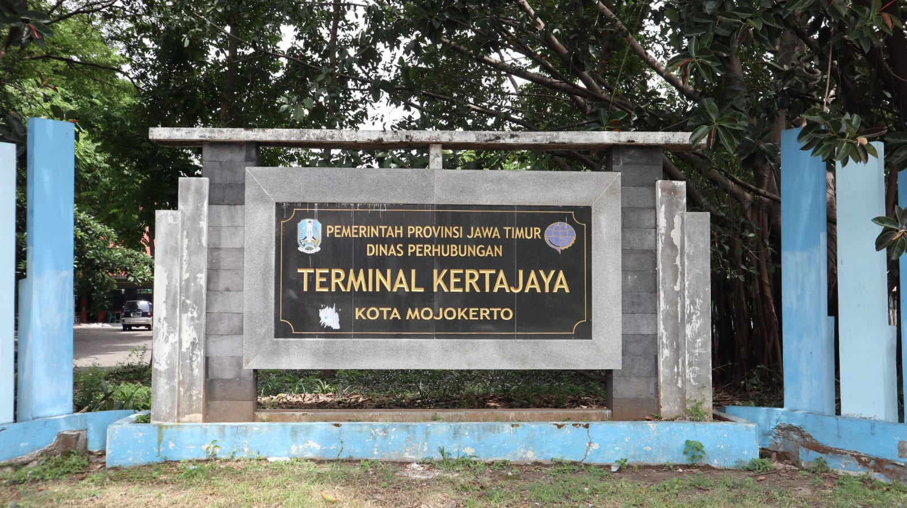
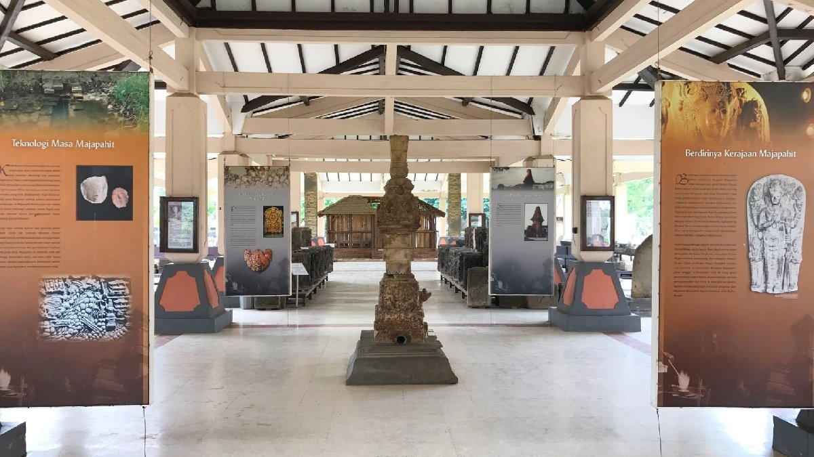
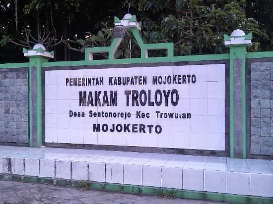
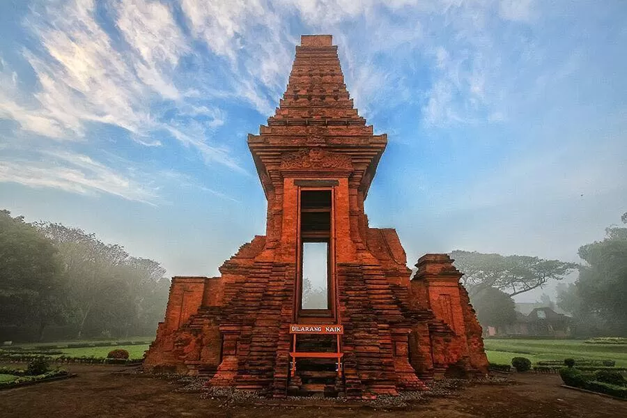
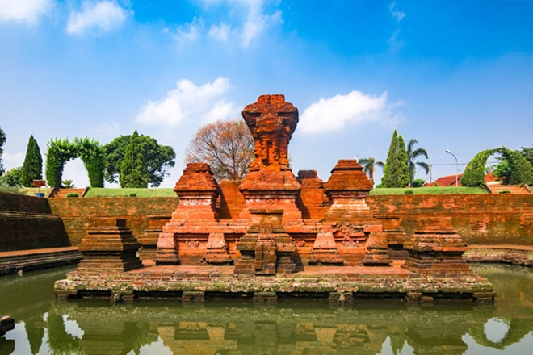
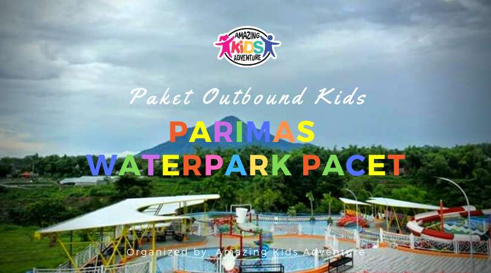
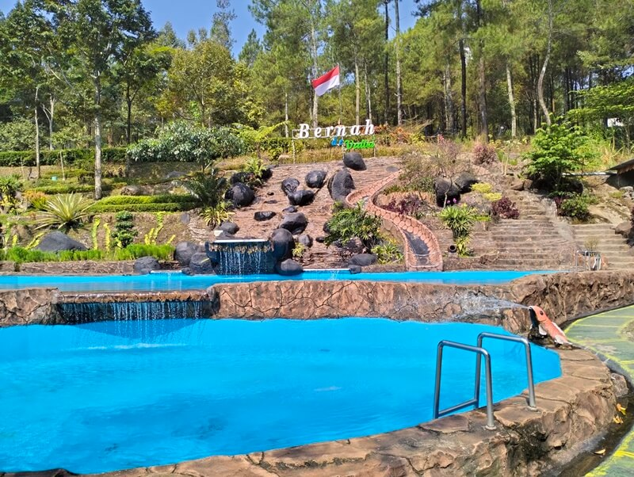
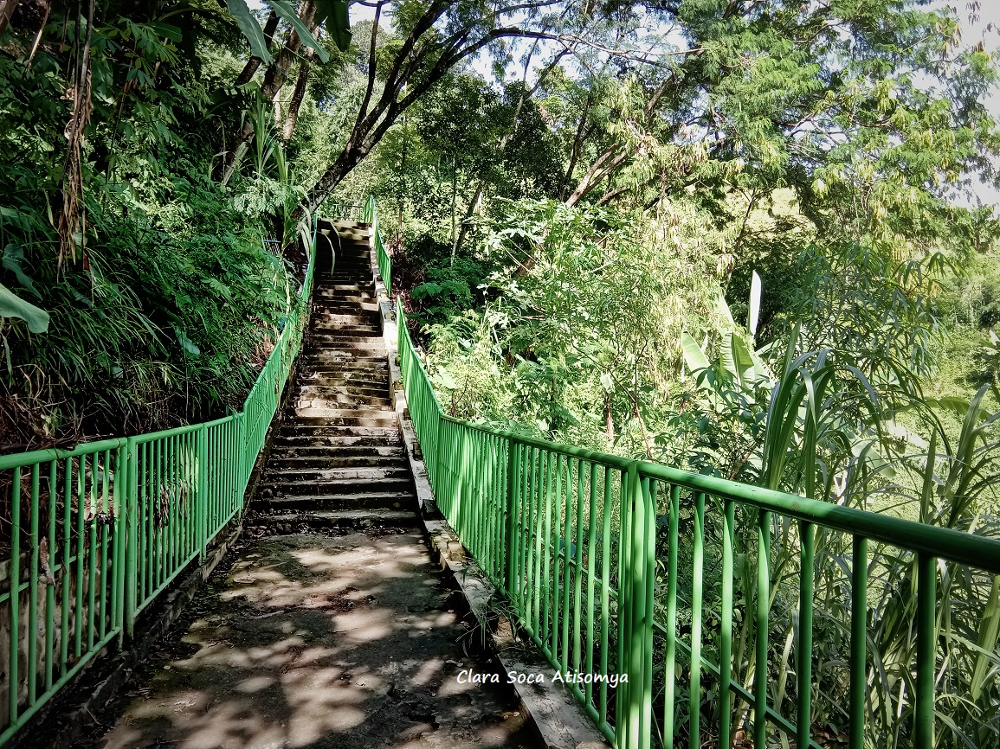
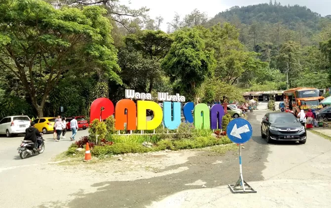

Informasi Rute
Urutan Destinasi Wisata
Terminal Kertajaya
Deskripsi: Titik keberangkatan perjalanan wisata Anda di Kabupaten Mojokerto.
Lokasi: Mojokerto
Keberangkatan: Pukul 08.00 WIB
Museum Trowulan
Deskripsi: Museum arkeologi yang menyimpan koleksi peninggalan Kerajaan Majapahit. Anda bisa melihat berbagai artefak bersejarah, arca, dan prasasti dari masa kejayaan Majapahit.
Lokasi: Trowulan, Mojokerto
Tiket: Rp 5.000 - Rp 10.000
Makam Troloyo
Deskripsi: Kompleks pemakaman Islam kuno masa Majapahit. Situs bersejarah yang menunjukkan akulturasi budaya Hindu-Islam di era Majapahit.
Lokasi: Trowulan, Mojokerto
Tiket: Gratis / Donasi
Candi Bajang Ratu
Deskripsi: Gapura megah peninggalan Majapahit yang dibangun pada tahun 1347 M. Candi ini memiliki arsitektur unik berbentuk gapura dengan relief yang indah.
Lokasi: Trowulan, Mojokerto
Tiket: Rp 5.000
Candi Tikus
Deskripsi: Situs pemandian kerajaan Majapahit yang terletak di bawah permukaan tanah. Struktur candinya unik dengan kolam dan sistem air yang masih berfungsi.
Lokasi: Trowulan, Mojokerto
Tiket: Rp 5.000
Parimas Waterpark
Deskripsi: Taman rekreasi air dengan berbagai wahana permainan air yang cocok untuk keluarga. Tersedia kolam renang, waterslide, dan area bermain anak.
Lokasi: Sooko, Mojokerto
Tiket: Rp 30.000 - Rp 50.000
Bernah Da Valley
Deskripsi: Destinasi wisata alam dengan pemandangan pegunungan yang indah. Cocok untuk berfoto, camping, dan menikmati udara sejuk pegunungan.
Lokasi: Pacet, Mojokerto
Tiket: Rp 10.000 - Rp 20.000
Ubalan Waterpark

Deskripsi: Pemandian air panas alami yang terletak di kawasan Pacet. Air hangatnya dipercaya memiliki khasiat untuk kesehatan dan relaksasi.
Lokasi: Pacet, Mojokerto
Tiket: Rp 15.000 - Rp 25.000
Air Terjun Coban Canggu
Deskripsi: Air terjun yang indah dengan ketinggian sekitar 30 meter. Dikelilingi hutan tropis dan udara yang sejuk, cocok untuk trekking dan fotografi alam.
Lokasi: Pacet, Mojokerto
Tiket: Rp 5.000 - Rp 10.000
Wana Wisata Padusan Pacet
Deskripsi: Pemandian air panas alami yang terkenal di kawasan Pacet. Tempat yang sempurna untuk berendam dan relaksasi setelah perjalanan panjang menjelajahi Mojokerto.
Lokasi: Pacet, Mojokerto
Tiket: Rp 20.000 - Rp 40.000
Total Perjalanan
Rute: Terminal Kertajaya → Museum Trowulan → Makam Troloyo → Candi Bajang Ratu → Candi Tikus → Parimas Waterpark → Bernah Da Valley → Ubalan Waterpark → Air Terjun Coban Canggu → Wana Wisata Padusan Pacet